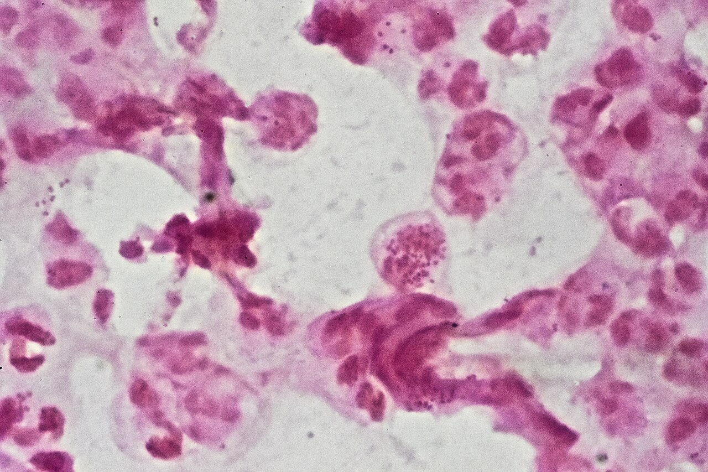

Гонорея, негонококковые уретриты у мужчин. Лечение и профилактика.
Гонорея: определение, этиология и эпидемиология
Гонорея — инфекционное заболевание, вызываемое Neisseria gonorrhoeae (гонококком), передающееся преимущественно половым путём и поражающее слизистые оболочки мочеполового тракта, а при орогенитальных и аногенитальных контактах — также глотки и прямой кишки; изредка инфекция генерализуется. Возбудитель открыт в 1879 году Альбертом Нейсером — с тех пор прошло полтора века, а гонорея по-прежнему входит в число инфекций, представляющих прямую угрозу репродуктивному здоровью населения.
Кажется, что гонококк — это просто «ещё одна бактерия», которую антибиотик убивает за несколько дней. На деле возбудитель оказался биологически изощрённее большинства патогенов: он умеет прятаться внутри клеток хозяина, менять собственную форму и передавать «инструкции устойчивости» соседним бактериям — быстрее, чем успевает сработать иммунный ответ.
Морфология и строение
Neisseria gonorrhoeae — грамотрицательный парный кокк, то есть диплококк. Длина каждой клетки от 1,25 до 1,6 мкм, поперечник — от 0,7 до 0,8 мкм. Форма характерная: два кофейных зерна, сложенных вогнутыми концами навстречу друг другу.[4, с. 203] В препарате гонококки располагаются группами, чаще всего внутриклеточно — в цитоплазме нейтрофилов.[4, с. 203]
Посмотрите на микрофотографию ниже: в розово-фиолетовом поле препарата видны лейкоциты с тёмными зёрнами внутри — это и есть гонококки, поглощённые нейтрофилами, но не уничтоженные ими.

На снимке хорошо видно, что диплококки лежат именно внутри клеток, а не свободно между ними. Это принципиально: фагоцитоз гонококков носит незавершённый характер. У части штаммов бактерии окружены полисахаридной капсулой, которая защищает их от переваривания фагоцитами — и возбудитель превращает клетку иммунной защиты в укрытие, явление, которое называют эндоцитобиозом.
Стенка гонококка устроена в три слоя: трёхслойная наружная мембрана, цитоплазматическая мембрана и цитоплазма с рибосомами и ядерной вакуолью.[4, с. 203] На поверхности наружной мембраны вирулентных штаммов расположены белковые нити — пили. С их помощью гонококк прочно фиксируется на эпителиальных клетках; они же служат каналом для передачи генетической информации между бактериями.
Наружная мембрана содержит три ключевых белка. Протеин I определяет серовариантность штамма: серовар IА чаще связан с диссеминированной инфекцией, серовар IВ — с повышенной устойчивостью к антибиотикам. Протеин II обеспечивает дополнительное прикрепление к эпителию; при диссеминации штаммы образуют так называемые «прозрачные» колонии с малым количеством этого белка. Протеин III снижает бактерицидную активность сыворотки крови, позволяя возбудителю выживать в системном кровотоке.
Устойчивость и резистентность
Во внешней среде гонококк крайне нестоек: он быстро погибает при высыхании, действии прямого солнечного света и стандартных дезинфицирующих средств. Именно этим объясняется то, что бытовой путь передачи реализуется менее чем в 1% случаев.
Совсем другое дело — устойчивость к антибиотикам. Гонококки способны к так называемой L-трансформации: они переходят в L-формы, лишённые клеточной стенки и приобретающие выраженную полирезистентность ко многим антибиотикам сразу. Плазмиды — внехромосомные генетические элементы — опосредуют выработку β-лактамазы (фермента, разрушающего β-лактамное кольцо пенициллинов и части цефалоспоринов), а также появление хинолоноустойчивых штаммов и штаммов с множественной лекарственной устойчивостью.[4, с. 204] Именно поэтому антибиотики пенициллинового ряда в настоящее время утратили первенство в лечении гонореи.
Ниже — сводная таблица ключевых свойств гонококка. Загляните в неё, а затем прочтите разбор: каждое свойство из таблицы имеет прямые клинические последствия.
| Признак | Характеристика | Клиническое значение |
|---|---|---|
| Форма и окраска | Грамотрицательный диплококк, форма «кофейных зёрен», 1,25–1,6 × 0,7–0,8 мкм | Диагностический признак при окраске по Граму |
| Расположение в препарате | Внутриклеточно, группами, в нейтрофилах | Незавершённый фагоцитоз — персистенция внутри клеток |
| Капсула | Полисахаридная, у части штаммов | Защита от фагоцитоза, эндоцитобиоз |
| Пили | Нити на поверхности наружной мембраны | Фиксация на эпителии; передача плазмид с генами резистентности |
| Протеин I | Сероваров IА и IВ | IА — диссеминация; IВ — антибиотикорезистентность |
| Протеин II | Адгезин наружной мембраны | Дополнительное прикрепление; «прозрачные» колонии при диссеминации |
| Протеин III | Модулятор бактерицидности | Снижение бактерицидной активности сыворотки |
| L-трансформация | Переход в бесстеночные формы | Полирезистентность ко многим антибиотикам |
| β-лактамаза | Фермент, кодируемый плазмидами | Разрушение пенициллинов; основание для отказа от них |
| Устойчивость во внешней среде | Нестоек: гибнет при высыхании и дезинфекции | Бытовой путь передачи — менее 1% случаев |
Как видите из таблицы, устойчивость гонококка складывается из нескольких независимых механизмов. Незавершённый фагоцитоз даёт убежище внутри нейтрофилов. L-формы позволяют пережить курс антибиотика, сбросив оболочку. Плазмиды с генами β-лактамазы распространяются горизонтально — от штамма к штамму — через те же пили, которые служат для прикрепления к эпителию. Ни один из этих механизмов не работает изолированно: они усиливают друг друга.
Пути передачи
Основной путь — половой, прямой контакт. Важна асимметрия риска: мужчина инфицируется при однократном контакте с больной женщиной в 17–20% случаев, тогда как женщина после однократного контакта с больным мужчиной — примерно в 80% случаев.[4, с. 203] Эта разница объясняется анатомо-физиологическими, биохимическими и гормональными особенностями женского организма: большая площадь контакта слизистой, нейтральная pH влагалища и высокий уровень эстрогенов создают более благоприятные условия для фиксации гонококка. При этом уретрит выявляется почти у 90% женщин, больных гонореей, хотя клинические проявления нередко бывают стёртыми.[4, с. 208]
Реже инфекция передаётся непрямым контактным путём — через поцелуи, загрязнённые руки или предметы личной гигиены и общую постель. Бытовой путь, как уже сказано, реализуется менее чем в 1% случаев — именно потому, что гонококк быстро гибнет вне организма хозяина.
Вертикальный путь — заражение новорождённого при прохождении через родовые пути больной матери. Следствием становится гонобленорея — гонококковый конъюнктивит новорождённых, тяжёлое осложнение вплоть до потери зрения. Для его профилактики в родильном зале сразу после рождения закапывают 30% раствор сульфацила натрия или 1% раствор нитрата серебра, девочкам одновременно обрабатывают таким же раствором наружные половые органы.
Эпидемиология и группы риска
Высокая распространённость гонореи обусловлена сочетанием биологических и социальных факторов.[4, с. 203] Среди социальных — демографические сдвиги с увеличением доли молодого взрослого населения; повышение частоты разводов и числа одиноких людей; международный туризм, открывающий быстрый географический перенос штаммов; употребление наркотиков и злоупотребление алкоголем; проституция; гомосексуальные контакты.[4, с. 203] Пик заболеваемости приходится на возраст 15–29 лет. Среди больных гонореей в целом преобладают мужчины, однако среди подростков соотношение обратное — чаще болеют женщины.
Отдельная проблема — скрытое распространение инфекции через бессимптомных носителей. У женщин гонококковая инфекция изначально протекает бессимптомно в 53–94% случаев; у мужчин на асимптомные формы приходится 7–48%. Это означает, что значительная часть источников инфекции не подозревает о своём диагнозе и не обращается за помощью.
Из-за общности путей передачи смешанные инфекции — норма, а не исключение: от 33,8 до 61% больных гонореей одновременно инфицированы двумя и более возбудителями ИППП.[4, с. 203] Наиболее часто выявляется гонорейно-хламидийная коинфекция, а так называемый постгонорейный уретрит в 80% случаев обусловлен именно хламидиями.[4, с. 203] Это обстоятельство напрямую определяет тактику лечения: схему подбирают с учётом вероятного сочетанного возбудителя, не дожидаясь результатов всех тестов.
Патогенез гонореи: тропизм, пути распространения и механизмы повреждения
Гонококк — узкий специалист. Он поражает ткани, выстланные цилиндрическим и железистым эпителием: уретру, цервикальный канал, нижний отдел прямой кишки, конъюнктиву. Это и есть тропизм — избирательное сродство возбудителя к определённому типу клеток. Слизистые оболочки, покрытые многослойным плоским эпителием — влагалище, вульва у взрослых женщин, кожа — в патологический процесс вовлекаются редко, потому что плотный многослойный пласт создаёт механический барьер, который гонококк не умеет преодолевать так же эффективно. Именно тропизм объясняет, почему у взрослой женщины первым очагом становится цервикальный канал, а не влагалище.[4, с. 202]
Проследим цепочку событий после попадания возбудителя на слизистую — шаг за шагом, от момента контакта до отдалённых органов.
Адгезия. Гонококки фиксируются на эпителиальных клетках с помощью пилей и участков локализации протеина II наружной оболочки — и делают это настолько быстро, что мочеиспускание сразу после полового акта не предотвращает заражения. Не будь этого механизма адгезии, возбудителю пришлось бы часами удерживаться на слизистой за счёт одних лишь физических сил — поток мочи смывал бы его без следа. Пили и протеин II устраняют этот изъян за секунды. Те же пили служат каналом передачи генетической информации через плазмиды, несущие детерминанты резистентности к антибиотикам.
Инвазия. Закрепившись, гонококки проникают внутрь эпителиальных клеток и через межклеточные пространства достигают подэпителиальной соединительной ткани. Фагоцитоз эпителиальными клетками носит незавершённый характер: поглощённые гонококки не погибают и образуют в субэпителиальном слое микроколонии. Там же открывается доступ к кровеносным и лимфатическим сосудам — плацдарм для дальнейшего распространения. В эпителии тем временем разворачиваются деструктивные изменения и метаплазия — цилиндрический эпителий замещается многослойным плоским, а местами и ороговевающим.
Полисахаридная капсула, которой располагает часть штаммов гонококка, защищает их от фагоцитоза лейкоцитами — так реализуется незавершённый фагоцитоз и персистирование — длительное существование возбудителя внутри клетки-хозяина в состоянии, при котором он недосягаем ни для антибактериального иммунитета, ни для многих антибиотиков. Эндоцитобиоз создаёт скрытый резервуар инфекции и объясняет торпидное, малосимптомное течение у части пациентов: у мужчин на бессимптомные формы гонококковой инфекции приходится 7–48%.
Воспаление и его последствия. Хемотаксис притягивает к месту внедрения гонококков нейтрофилы, лимфоциты и плазматические клетки. В уретре накапливается гнойный экссудат — те самые выделения, которые служат первым клиническим признаком. В подэпителиальном слое формируется воспалительный инфильтрат, и здесь кроется одна из самых серьёзных угроз: инфильтрат способен длительно сохраняться даже после гибели гонококков, а затем замещаться рубцовой тканью, оставляя стриктуры — сужения мочеиспускательного канала. Воспалительный процесс постепенно распространяется по поверхности слизистой и вовлекает железы и лакуны уретры, расположенные преимущественно в губчатой части — иногда глубоко до 8 мм в пещеристых телах полового члена. Когда устья этих желёз закупориваются воспалительным детритом, гной накапливается в их просвете и образуются псевдоабсцессы — литтриты; возможно также формирование периуретральных абсцессов.
Распространению инфекции служат два пути. Первый — per continuitatem, то есть постепенное ползание по поверхности слизистой. Второй, более быстрый — лимфогенный: гонококки прикрепляются к мигрирующим клеткам, прежде всего нейтрофилам и сперматозоидам, и перемещаются с током лимфы в более отдалённые отделы мочеполового тракта.
Восходящее распространение означает переход воспаления из передней уретры в заднюю и далее — на предстательную железу, семенные пузырьки, семявыносящий проток, придатки яичек. Именно поэтому этот вариант называют восходящей гонореей. Её развитию способствуют нерациональное или прерванное лечение, самолечение, погрешности режима — алкоголь, половые контакты в период болезни, — а также аномалии строения уретры, сопутствующие заболевания (сахарный диабет, туберкулёз, анемия) и микст-инфекции. Антибиотики убивают гонококков, но уже сформировавшийся инфильтрат живёт по собственным законам: именно поэтому прерванный курс лечения оставляет рубец там, где мог быть только временный отёк.
Редко, но закономерно, возникает диссеминированная гонококковая инфекция — гематогенное распространение возбудителя с транзиторной гонококкемией или гонококковым сепсисом.[4, с. 204] При этом гонококки достигают суставов, кожи, эндокарда, мозговых оболочек. Гематогенный путь — не случайность, а следствие той самой инвазии в подэпителиальную ткань с её богатой сетью сосудов.
На этом фоне ещё опаснее становится ассоциация гонококка с другими возбудителями инфекций, передаваемых половым путём. Гонорейно-хламидийная инфекция — наиболее частое сочетание; смешанная инфекция регистрируется у 33,8–61% больных гонореей. Ассоциация с хламидиями, уреаплазмами и трихомонадами взаимно усиливает патогенность каждого возбудителя и изменяет иммунный ответ.[4, с. 204] Особого внимания заслуживает трихомонада: она способна поглощать гонококков, не уничтожая их. Внутри трихомонады гонококки недосягаемы для антибиотиков и защитных факторов слизистой — персистирование в таком «живом контейнере» поддерживает инфекцию даже при, казалось бы, проводимом лечении. Именно при торпидной гонорее, возникающей на фоне такого симбиоза, чаще всего и обнаруживают гонококки с изменёнными морфофункциональными свойствами и L-формы.[4, с. 204]
Иммунный ответ при гонорее возникает, но не защищает. Антитела классов IgA, IgG, IgM появляются на 5–7-й день болезни и достигают пика через 2 недели — а через 6 месяцев их уже невозможно определить. Защитного иммунитета не формируется: повторное заражение возможно и при высоком титре специфических антител.[4, с. 204] При гонококковой инфекции снижается и бактерицидная способность слизистых, и уровень лизоцима, и местный иммунитет в целом. Таким образом, гонорея разрушает именно тот барьер, который должен был бы её остановить — и каждый повторный эпизод инфекции начинается на уже ослабленной почве.
Классификация и клинические формы гонореи у мужчин
Прежде чем разбирать симптомы, нужна система координат: одно и то же заболевание у разных пациентов выглядит совершенно по-разному — и лечат их тоже по-разному. Именно поэтому гонорею классифицируют сразу по нескольким основаниям.
Первое основание — длительность болезни и интенсивность ответа организма. Свежая гонорея — это то есть попросту инфекция давностью до двух месяцев. Внутри этой категории различают три стадии: острую, подострую и торпидную. Торпидное течение — то есть попросту малосимптомное, почти без жалоб — особенно опасно: человек чувствует себя здоровым и продолжает заражать партнёров. Если болезнь длится свыше двух месяцев или время заражения неизвестно, говорят о хронической гонорее. Отдельно выделяют латентную форму, то есть попросту носительство: гонококк живёт на слизистой, никакой воспалительной реакции нет, но возбудитель обнаруживается при лабораторном исследовании.
Второе основание — топика поражения, то есть где именно сидит воспаление в уретре. По МКБ-X выделяют гонококковую инфекцию нижнего отдела мочеполового тракта без осложнений и с абсцедированием парауретральных желёз; инфекцию верхнего отдела — эпидидимит, орхит, простатит; наконец, поражения других органов: глаза, глотки, аноректальной области, а при диссеминации — сепсис, эндокардит, менингит.
Посмотрите на Таблицу 1 — там эти три ветки классификации собраны рядом, и сразу видно, как они соотносятся. Но таблица не заменяет разбора, она только помогает удержать картину в голове, поэтому пройдём по каждой строке словами.
| Форма | Давность | Стадия / вариант | Ключевые симптомы | Морфология уретры |
|---|---|---|---|---|
| Свежая | до 2 мес | Острая | Обильные гнойные выделения, резкая дизурия, отёк губок уретры | Диффузная экссудативная инфильтрация, лейкоцитарная инфильтрация субэпителия |
| Свежая | до 2 мес | Подострая | Умеренные зуд и резь, необильные выделения | Те же изменения, менее выражены |
| Свежая | до 2 мес | Торпидная (малосимптомная) | Скудные выделения или их отсутствие, жалобы минимальны | Начальные очаговые инфильтраты |
| Хроническая | свыше 2 мес | Торпидная / бессимптомная | Часто нет жалоб; периодические обострения под влиянием провоцирующих факторов | Мягкий или твёрдый инфильтрат, грануляции, десквамация; метаплазия цилиндрического эпителия в плоский; исход твёрдого инфильтрата — стриктура уретры |
| Латентная | любая | Носительство | Нет | Воспалительной реакции нет, возбудитель обнаруживается лабораторно |
Итак, по строкам. Острая свежая гонорея — самая шумная форма, её не пропустишь. Подострая развивается на её фоне даже без лечения через 3–10 дней: выделения становятся скуднее, боль стихает, но возбудитель никуда не уходит. Торпидная свежая и хроническая — тихие формы, и именно при них чаще всего выявляют гонококков с изменёнными свойствами, L-формы и штаммы с множественной лекарственной устойчивостью. Латентная форма — крайний вариант тишины: никаких симптомов, только лабораторная находка.
Морфологическая разница принципиальна. При свежем уретрите в стенке канала идёт диффузная экссудативная инфильтрация с обилием полиморфноядерных лейкоцитов и резким расширением сосудов стромы.[4, с. 205] При хроническом к экссудации добавляются пролиферативные изменения: инфильтраты становятся очаговыми, цилиндрический эпителий на отдельных участках перестраивается в многослойный плоский и нередко ороговевающий, а исходом твёрдого инфильтрата может стать рубцовая атрофия и стриктура уретры — то есть рубцовое сужение просвета канала.[4, с. 205]
Теперь о топике. Гонорея у мужчин протекает в форме переднего или тотального уретрита.[4, с. 205] Передний уретрит — то есть попросту воспаление, ограниченное передним (висячим) отделом мочеиспускательного канала, до наружного сфинктера. Тотальный уретрит — то есть попросту воспаление, захватившее весь канал вместе с задним отделом, вплоть до мочевого пузыря.
Инкубационный период у мужчин в среднем составляет 3–5 дней, но может растягиваться до трёх недель.[4, с. 205] По другим данным, среднее значение ещё короче — 3–4 дня, а диапазон шире: от 12 часов до трёх месяцев; при смешанной гонорее инкубация удлиняется. Оба источника сходятся в главном: типичный срок — несколько дней.
Свежий острый передний гонорейный уретрит начинается с зуда и жжения у наружного отверстия уретры, затем появляются сначала слизисто-гнойные, а вскоре обильные гнойные выделения желтоватого или коричневатого цвета, пачкающие бельё.[4, с. 205] При мочеиспускании — режущие боли в самом его начале. Наружное отверстие уретры гиперемировано, губки отёчны, первая порция мочи объёмом около 200 мл мутная от гноя.[4, с. 205] Диагностически это важно: помутнена именно первая порция — та, что смывает содержимое переднего отдела канала.
Когда воспаление переходит на задний отдел, картина меняется. При тотальном уретрите на первый план выходят учащённые болезненные позывы к мочеиспусканию, резь и боль в его конце, а не в начале, и терминальная гематурия — кровь появляется в последних каплях мочи. Кроме того, возникают болезненные и преждевременные эрекции, преждевременная эякуляция, гемоспермия — кровь в семенной жидкости. Все эти признаки объединяет общая причина: колликулит, то есть воспаление семенного бугорка — небольшого возвышения на задней стенке уретры, богатого нервными окончаниями. При тотальном уретрите обе порции мочи в пробе Томпсона мутные: первые 50–60 мл поражены из переднего отдела, вторая порция — из заднего.
У мужчин на долю асимптомных форм гонококковой инфекции приходится 7–48%. Это широкий разброс, и он отражает реальность: часть пациентов не предъявляет жалоб и приходит к врачу лишь после обнаружения инфекции у партнёра. Именно поэтому торпидная и хроническая формы особенно значимы эпидемиологически.
Хронический гонорейный уретрит течёт торпидно или вовсе бессимптомно — через три месяца от начала болезни так протекает инфекция у 95% больных. В стенке канала формируются мягкий или твёрдый инфильтрат, грануляции, очаги десквамации. Мягкий инфильтрат обратим; твёрдый — исходом которого может стать стриктура — уже нет. Это одна из главных причин, по которой хроническую гонорею лечат комплексно, добавляя к антибиотикам патогенетические методы: без воздействия на рубцовые изменения антибактериальная терапия исправит инфекцию, но не вернёт просвет канала.
Теперь посмотрите на снимки чуть ниже — это проявления гонококкемии, то есть диссеминированной гонококковой инфекции с бактериемией. На коже дистального отдела предплечья, запястья и нижних конечностей видны геморрагические папулы и везикуло-пустулёзные элементы — немногочисленные, разбросанные, на фоне внешне непоражённой кожи.

Это не уретрит и не его осложнение в обычном смысле — это редкий исход гематогенной диссеминации гонококков, то есть их распространения с током крови. Гнойничок или геморрагическая папула на коже конечности у молодого пациента с суставными болями — повод немедленно думать о гонококкемии. Кожные элементы немногочисленны (обычно их от 5 до 40), расположены асимметрично в области дистальных отделов конечностей и представляют собой эмболы инфицированных комплексов. Такая форма соответствует поражению «других органов» по МКБ-X и требует принципиально другого подхода к лечению по сравнению с неосложнённым уретритом.
Главное, что нужно вынести из этого раздела: форма гонореи определяет и объём обследования, и тактику лечения — острая свежая требует только антибиотиков, торпидная и хроническая требуют комплексной терапии, а диссеминированная выходит за пределы урологии вовсе.
Осложнения гонореи у мужчин: поражение местных структур
Гонококковая инфекция редко ограничивается слизистой уретры. Возбудитель распространяется по протяжению — вверх по мочеполовому тракту и в окружающие ткани, — и тогда картина острого уретрита отходит на второй план, уступая место осложнениям. Их перечень длинный, но за ним стоит простая логика: воспаление идёт туда, куда открыт путь. Посмотрите на Таблицу 1 — она собирает все местные осложнения в одном месте. Но таблицы часто пролистывают, поэтому ниже каждое из них разобрано словами: ни одна строка не останется только в ячейках.
| Осложнение | Поражённая структура | Ключевые симптомы | Возможный исход |
|---|---|---|---|
| Баланопостит | Головка полового члена (баланит) + внутренний листок крайней плоти (постит) | Зуд, жжение, гиперемия, отёк, эрозии, гнойное отделяемое | Выздоровление при лечении; фимоз при затяжном воспалении |
| Фимоз | Крайняя плоть | Невозможность обнажить головку | Парафимоз; хирургическое лечение |
| Парафимоз | Препуциальное кольцо, ущемляющее головку | Отёк головки, нарастающая ишемия | Некроз тканей без лечения |
| Кавернит | Пещеристые тела полового члена | Боль, искривление при эрекции, затруднение мочеиспускания | Фиброз, стойкое искривление |
| Периуретрит / стриктура уретры | Периуретральная клетчатка и кавернозное тело уретры | Плотный болезненный инфильтрат, тонкая струя мочи | Абсцесс; фиброз; стриктура |
| Колликулит | Семенной бугорок | Боли с иррадиацией в бёдра, живот; половые расстройства | Атрофия бугорка; нарушение эякуляции |
| Тизонит | Тизонievы железы у уздечки | Болезненный инфильтрат у уздечки | Абсцесс; рубцевание |
| Парауретрит | Парауретральные ходы | Болезненные уплотнения вдоль уретры | Закрытый аденит; абсцесс |
| Лимфангит | Лимфатические сосуды полового члена | Плотный болезненный тяж на дорсальной поверхности | Паховый лимфаденит |
| Везикулит | Семенные пузырьки | Болезненные поллюции, тянущие боли в тазу; при обострении — коликообразные боли | Эмпиема; нарушение фертильности |
| Деферентит | Семявыносящий проток | Плотный болезненный шнур при пальпации | Обструкция; бесплодие |
| Фуникулит | Семенной канатик | Болезненный тяж толщиной с палец | Рубцевание; нарушение кровоснабжения яичка |
| Поражения кожи | Кожа у уздечки, дистальный отдел | Эрозии, эктимоподобные элементы | Рубцы; вторичное инфицирование |
Баланопостит — воспаление головки полового члена (баланит) и внутреннего листка крайней плоти (постит) одновременно. Механизм прост: гнойное отделяемое из уретры скапливается в препуциальном мешке и непрерывно мацерирует слизистую. Больной жалуется на зуд и жжение в области головки; при осмотре головка и внутренний листок крайней плоти гиперемированы, отёчны, покрыты эрозиями и гнойным отделяемым.
Если воспаление захватывает всю крайнюю плоть и нарастает отёк, формируется фимоз — невозможность обнажить головку полового члена. Это уже механическое следствие отёка: препуциальное кольцо сужается, и ткани теряют подвижность. Опасность в том, что пациент или медработник может попытаться насильно открыть головку. Если отёчную воспалённую крайнюю плоть оттянуть за пределы головки и не вернуть на место, кольцо ущемляет головку — развивается парафимоз. Нарушается трофика тканей, отёк нарастает, и без своевременного вправления возможен некроз.
Кавернит — воспаление пещеристых тел полового члена. Гонококки проникают сюда из уретры через периуретральную ткань. Проявляется болью и искривлением полового члена при эрекции, а также затруднением мочеиспускания. Когда инфекция распространяется не в глубь пещеристых тел, а в периуретральную клетчатку и кавернозное тело уретры, говорят о периуретрите: пальпируется плотный болезненный инфильтрат без чётких границ. Исходы периуретрита — затруднение мочеиспускания, болезненные эрекции, искривление полового члена; при нагноении формируется абсцесс, а при фиброзе — стриктура уретры. Стриктура даёт самый характерный симптом: тонкая, вялая струя мочи при затруднённом мочеиспускании. Диагностируют её по анамнезу, бужированием, рентгенографией и уретроскопией.
Несколько осложнений связаны со вспомогательными структурами уретры. Колликулит — воспаление семенного бугорка (colliculus seminalis) — развивается в катаральной или интерстициальной форме. При интерстициальном колликулите боли иррадиируют в бёдра и живот, возникают половые расстройства; атрофическая форма оставляет стойкое нарушение эякуляции. Тизонит — воспаление тизониевых желёз, расположенных у уздечки полового члена; проявляется болезненным инфильтратом и может нагноиться. Парауретрит — воспаление парауретральных ходов вдоль мочеиспускательного канала: при открытом аденит желез отделяемое выделяется наружу, при закрытом — формируется ретенционное образование или абсцесс.
По дорсальной поверхности полового члена нередко пальпируется плотный болезненный тяж — это лимфангит, воспаление лимфатических сосудов. Представьте обычную резиновую трубку: в норме лимфатический сосуд мягкий и не прощупывается. При гонококковом лимфангите он уплотняется и становится ощутимым под пальцем — именно так отличают его от уплотнения пещеристого тела. Без лечения процесс распространяется на паховые лимфоузлы.
Гонорейный везикулит — воспаление семенных пузырьков — встречается в острой и хронической формах.[4, с. 207] Острая форма редка: она сопровождается высокой температурой тела, гематурией и иногда эмпиемой пузырька. Значительно чаще диагностируется хронический везикулит, который нередко протекает бессимптомно. При пальпации через прямую кишку в проекции семенного бугорка определяется тестоватый продолговатый тяж, тянущийся вверх и в сторону от предстательной железы.[4, с. 207] В период обострения возникают коликообразные боли в тазу, усиливающиеся при половом возбуждении и иррадиирующие в заднюю уретру, промежность или прямую кишку. Особенно характерны учащённые и болезненные поллюции, а также преждевременная эякуляция.[4, с. 207]
Деферентит — воспаление семявыносящего протока — обнаруживается при пальпации: проток прощупывается в виде плотного болезненного шнура.[4, с. 207] Если воспаление охватывает весь семенной канатик, говорят о фуникулите: весь канатик превращается в болезненный тяж толщиной с палец.[4, с. 207] Оба осложнения тесно связаны с эпидидимитом: гонококки достигают придатка яичка именно по семявыносящему протоку при его антиперистальтических сокращениях — тех, что возникают при воспалении семенного бугорка. Хронический эпидидимит заканчивается фиброзным уплотнением придатка с рубцовой обструкцией его протока, что ведёт к обтурационной аспермии и бесплодию.[4, с. 207] У мужчин с гонококковой инфекцией асимптомные формы составляют от 7 до 48%, и именно торпидное течение создаёт условия для незаметного продвижения инфекции к придатку.
Отдельного упоминания заслуживают гонококковые поражения кожи. В области уздечки полового члена гонококки вызывают эрозии — поверхностные дефекты с мацерированными краями. На дистальных отделах кожи полового члена могут возникать эктимоподобные элементы: более глубокие язвочки с некротическим дном, напоминающие шанкриформную пиодермию. Их отличие от твёрдого шанкра — болезненность и отсутствие характерного плотного инфильтрата в основании.
Как видите в таблице, исходы выстраиваются по одной оси: чем дольше воспаление существует без лечения, тем выше вероятность фиброза. Баланопостит обратим. Периуретрит при затяжном течении заканчивается стриктурой. Деферентит и эпидидимит — бесплодием. Итог этого раздела прост: каждое местное осложнение гонореи — это воспаление, которое не остановили вовремя, и цена промедления возрастает с каждым вовлечённым звеном.
Гонорейный эпидидимит и орхит как ведущие осложнения
Гонококковая инфекция распространяется по мочеполовому тракту не только вперёд, но и в обратном направлении. Представьте себе семявыносящий проток как трубку с двусторонним движением: при воспалении семенного бугорка возникают антиперистальтические сокращения, которые забрасывают гонококки ретроградно — из задней уретры прямо к придатку яичка. Так развивается эпидидимит — воспаление придатка яичка, одно из самых частых и опасных осложнений гонореи у мужчин.
Механизм прост, но последствия — нет. Как только гонококки достигают придатка, они вызывают острую воспалительную реакцию с экссудацией, отёком и инфильтрацией. Клиника разворачивается быстро: резкие боли в области яичка, температура тела до 39–40°С, озноб, гиперемия и выраженный отёк мошонки на стороне поражения. Придаток при пальпации увеличен, плотный, резко болезненный. Из-за выпота в оболочки яичка — периорхиэпидидимита — или одновременного поражения самого яичка органы мошонки перестают контурироваться порознь: всё сливается в единый болезненный конгломерат.
Теперь — разбор случая. Шаг первый: что видит врач. К нему обращается мужчина с резкой болью в правой половине мошонки, температурой 39,5°С, ознобом. Мошонка справа гиперемирована, отёчна; придаток не отграничивается от яичка при пальпации, прикосновение резко болезненно. В анамнезе — уретральные выделения неделю назад, лечения не получал. Шаг второй: что врач из этого выводит. Картина острого эпидидимита у молодого мужчины с уретритом в анамнезе немедленно указывает на гонококковую или хламидийную этиологию. По этиологии важна оговорка: C. trachomatis — самая частая причина острого эпидидимита у лиц моложе 35 лет, и клиника при этом неотличима от гонорейной. Дифференцировать их можно только лабораторно, а не у постели больного. Сложнее другое: острый эпидидимит необходимо разграничить с туберкулёзом придатка и с опухолью яичка. Туберкулёзный эпидидимит обычно развивается медленно, без яркой острой температурной реакции, нередко сопровождается характерным «чёткообразным» уплотнением семявыносящего протока и нередко двусторонний. Опухоль яичка, напротив, безболезненна или малоболезненна, плотная, монолитная; лихорадки нет, а сама опухоль исходит из паренхимы яичка, а не из придатка — при пальпации важно чётко разграничить, что именно увеличено. У нашего пациента — острое начало, высокая температура, связь с уретритом: это говорит в пользу инфекционного эпидидимита. Шаг третий: что врач делает дальше. Берёт материал из уретры для микроскопии и посева, госпитализирует больного, назначает постельный режим, иммобилизацию мошонки суспензорием, начинает этиотропную терапию и новокаиновую блокаду семенного канатика.[4, с. 211]
Острый эпидидимит обманчив ещё в одном отношении: он стихает сам. Острота воспаления уменьшается через 2–5 дней даже без лечения, и пациент может счесть, что болезнь прошла.[4, с. 207] Это ловушка. В хвосте или теле придатка к этому времени уже формируется плотный, слегка бугристый инфильтрат. Он замещается рубцом — и наступает рубцовая обструкция протока придатка. Итог — обтурационная аспермия: сперматозоиды физически не могут пройти через рубцово-суженный просток. Одновременно развивается аутоиммунный механизм: организм начинает вырабатывать антитела против собственных сперматозоидов — аутоагрессия, которая делает оставшиеся клетки функционально неполноценными. Именно поэтому у 40% супружеских пар с бесплодием выявляют хламидийную инфекцию — возбудитель, вызывающий эпидидимит, нередко остаётся в протоке незамеченным до тех пор, пока не обнаруживается бесплодие. В процесс может вовлекаться и семявыносящий проток — он прощупывается тогда как плотный болезненный шнур (деферентит), а иногда весь семенной канатик превращается в болезненный тяж толщиной с палец — фуникулит.[4, с. 207]
Если к воспалению придатка присоединяется поражение самого яичка, говорят об орхоэпидидимите — воспалении, захватывающем и придаток, и паренхиму яичка одновременно. При этом яичко увеличивается, становится плотным и болезненным, граница между ним и придатком при пальпации стирается. Дифференциальная диагностика с туберкулёзным орхоэпидидимитом и опухолью особенно важна именно здесь: любое безболезненное плотное образование в яичке у мужчины требует исключения злокачественной опухоли, и если клиническая картина не укладывается в острый инфекционный процесс, нужна ультразвуковая диагностика без промедления.
Хронический эпидидимит — это конечная стадия острого процесса, и именно она определяет репродуктивный прогноз. При переходе в хроническую форму происходит фиброзное уплотнение части или всего придатка, нередко с рубцовой обструкцией его протока.[4, с. 207] Течёт хронический эпидидимит бессимптомно или почти бессимптомно — лишь во время обострения появляется ощущение дискомфорта в мошонке. При пальпации придаток уплотнён, иногда увеличен, болезнен, но чётко отграничен от яичка — в этом и отличие от острой фазы, где граница стёрта. Семенной канатик может быть утолщён, семявыносящий проток — расширен в диаметре. Оплодотворительная способность спермы при хроническом эпидидимите снижена вплоть до полного бесплодия.[4, с. 207]
Хронический гонорейный уретрит через 3 месяца у 95% больных течёт торпидно или вовсе бессимптомно.[4, с. 205] Это означает, что у значительной части пациентов эпидидимит развивается на фоне уретрита, о котором они даже не подозревают. Главный вывод для практики: острый эпидидимит требует полноценного лечения независимо от того, стихли ли симптомы сами, — иначе рубцовый инфильтрат и обтурационная аспермия становятся необратимыми.
Экстрагенитальная и диссеминированная гонококковая инфекция
Гонококк — возбудитель, которого легко недооценить: кажется, что речь идёт об уретрите и только. Между тем инфекция способна поражать глотку, прямую кишку, конъюнктиву и, вырвавшись в кровоток, разноситься по суставам, коже, клапанам сердца и мозговым оболочкам. Эти формы объединяют под общим названием экстрагенитальной и диссеминированной гонококковой инфекции, и именно их пропускают чаще всего — потому что ищут не там.
Посмотрите на таблицу ниже — в ней собраны все основные внегенитальные локализации с симптомами и методами верификации. Разберём каждую строку подробнее, потому что таблицы нередко листают, не читая.
| Локализация | Путь заражения | Основные симптомы | Метод верификации |
|---|---|---|---|
| Гонорейный фарингит (орофарингеальная гонорея) | Орогенитальный контакт | Чаще бессимптомно; гиперемия и отёк слизистой, гнойный налёт на миндалинах, регионарный лимфаденит, у части — гингивит и стоматит | Культуральный метод (посев с миндалин и задней стенки глотки), ПЦР |
| Гонорейный проктит | Аногенитальный контакт; у женщин — затёк выделений из влагалища | Чаще бессимптомно; зуд, жжение, тенезмы, запоры, слизисто-гнойные выделения из прямой кишки; при ректоскопии — проктит и кровоточивость слизистой | Ректоскопия + посев отделяемого прямой кишки, ПЦР |
| Офтальмобленнорея (гонококковый конъюнктивит) | Занос руками; у новорождённых — при прохождении родовых путей больной матери или внутриутробно | Выраженный отёк век, обильное гноетечение, светобоязнь, кровоточивость гиперемированной конъюнктивы; осложнение — язвы или прободение роговицы | Микроскопия и посев отделяемого конъюнктивы, ПЦР |
| Диссеминированная гонококковая инфекция | Гематогенное распространение из генитального очага | Лихорадка, асимметричный мигрирующий артрит, пустулёзные кожные высыпания; редко — эндокардит, менингит | Посев крови, синовиальной жидкости; ПЦР; посев из первичного генитального очага |
Гонорейный фарингит — воспаление слизистой оболочки миндалин и глотки, вызванное гонококком, — развивается после орогенитального контакта с больным партнёром. Коварство этой формы в том, что она протекает преимущественно бессимптомно: пациент ни на что не жалуется, врач ничего не ищет, а источник инфекции остаётся нераспознанным. Когда симптомы всё же появляются, картина выглядит как обычная ангина: гиперемия и отёк слизистой, гнойный налёт на миндалинах, увеличение регионарных лимфоузлов, у части больных — гингивит и стоматит. Отличить гонорейный фарингит от стрептококкового клинически невозможно — только посев с миндалин и задней стенки глотки или ПЦР дают ответ. Здесь важна настороженность: при любом уретрите или цервиците следует спросить об орогенитальных контактах и взять мазок из глотки.
Гонорейный проктит — поражение нижней трети прямой кишки гонококком — встречается у женщин и девочек, больных гонореей (инфекция затекает из влагалища), а также у мужчин, практикующих пассивные аногенитальные контакты.[4, с. 211] Субъективно пациент иногда отмечает зуд, жжение, тенезмы и запоры; характерны слизистые или слизисто-гнойные выделения из прямой кишки. Однако чаще проктит протекает без каких-либо жалоб — и именно поэтому его находят только при ректоскопии, которая обнаруживает картину проктита и кровоточивость слизистой в месте контакта.[4, с. 211] Верификация: посев отделяемого прямой кишки или ПЦР.
Офтальмобленнорея (от греч. blennos — слизь и rhoia — истечение) — гонококковый конъюнктивит — развивается при заносе гонококков на конъюнктиву руками; у новорождённых — во время прохождения родовых путей больной матери или внутриутробно, инкубационный период при этом составляет 3–4 дня.[4, с. 212] Клиническая картина разительна: сильный отёк век, обильное гноетечение, светобоязнь, резкая гиперемия и кровоточивость конъюнктивы. Тяжёлое осложнение — поражение роговицы с развитием язв или её прободение, которое ведёт к слепоте.[4, с. 212] Лечение проводится совместно дерматовенерологом и офтальмологом, причём системный антибиотик вводят внутримышечно независимо от того, сколько препарата уже закапано местно.
Теперь — самая тяжёлая форма. При гематогенном распространении гонококков из генитального очага развивается диссеминированная гонококковая инфекция: гонококковый артрит, кожные поражения, лихорадка, а в редких случаях — эндокардит и менингит. Гонококковый артрит — воспаление сустава, вызванное занесением гонококка с током крови, — характеризуется асимметричным мигрирующим поражением: сначала воспаляется один сустав, затем другой. Чаще страдают крупные суставы — коленный, голеностопный, лучезапястный. Одновременно на коже появляются пустулёзные или геморрагически-некротические высыпания — немногочисленные, обычно на конечностях.
На снимке выше — задняя поверхность нижних конечностей пациента с диссеминированной гонококковой инфекцией. Обратите внимание: высыпаний немного, они разбросаны асимметрично и представляют собой пустулы на воспалённом основании. Именно такой вид — единичные пустулы на конечностях в сочетании с артритом и лихорадкой — должен немедленно вызывать мысль о гонококковом сепсисе.

На крупноплановом снимке хорошо видны точечные эритематозные элементы — ранняя стадия тех же высыпаний. Сравните: на предыдущем кадре — уже сформированные пустулы, здесь — ещё только начало процесса. Эти два снимка показывают один и тот же процесс в разные моменты его развития: сначала маленькое красное пятно, затем — пустула с геморрагическим компонентом.
Теперь — соотношение, которое важно держать в голове. У мужчин бессимптомные формы гонококковой инфекции составляют от 7 до 48%, тогда как у женщин доля бессимптомных форм достигает 53–94%. Это разница в два раза и более. На практике она означает следующее: именно у женщин нераспознанный генитальный очаг чаще всего и становится плацдармом для диссеминации. Гонококк тихо сидит в шейке матки, никак себя не выявляя, — а потом уходит в кровь. Эндокардит и менингит при диссеминированной гонококковой инфекции редки, но летальны; эндокардит занимает особое место, потому что при нём разрушаются клапаны сердца. Диагноз диссеминированной формы подтверждают посевом крови и синовиальной жидкости, а также обязательным посевом из первичного генитального очага — уретры, шейки матки, прямой кишки или глотки.
Как видите в таблице, у каждой из четырёх форм — свой путь заражения, своя степень выраженности симптомов и свой метод верификации. Общее у них одно: клиническая скудность. Фарингит и проктит чаще всего бессимптомны, офтальмобленнорея ярка, но её легко принять за банальный конъюнктивит, а диссеминированную форму не заподозрят, пока не вспомнят о возможном генитальном источнике. Ключевой вывод раздела: экстрагенитальная гонорея — это прежде всего диагностическая задача; лечить её умеют, а вот думать о ней вовремя получается не всегда.
Диагностика гонореи: лабораторные методы и критерии излечённости
Кажется, что диагноз гонореи очевиден: есть характерные выделения — значит, достаточно взглянуть на мазок и дело сделано. На деле лабораторная диагностика устроена как многоступенчатый алгоритм, и каждый его шаг применяется в строго определённой ситуации. Пропустить шаг — значит получить ложноотрицательный результат именно там, где он опаснее всего: при торпидной и хронической гонорее, когда человек продолжает заражать партнёров, не подозревая о болезни.
Первый и самый доступный метод — микроскопия мазка (прямое исследование окрашенного препарата под микроскопом). Мазок берут из уретры желобоватым зондом, введённым на 2–3 см вглубь, предпочтительно через 4 часа после мочеиспускания: моча смывает отделяемое, и результат окажется беднее. Препарат окрашивают метиленовым синим или по Граму. Критерий достоверного обнаружения гонококков при окраске по Граму — типичные грамотрицательные диплококки, расположенные внутри нейтрофилов: бобовидные, попарно сложенные вогнутыми сторонами друг к другу. Именно внутриклеточное расположение отличает гонококк от случайной флоры. Метиленовый синий даёт более быстрый результат, но не позволяет судить о грамположительности или отрицательности, поэтому окончательное заключение выносится только по окраске по Граму.
Микроскопия хорошо работает при свежей острой гонорее с обильным отделяемым. При хронической гонорее, смешанной инфекции или после курса антибиотиков — другая история. После приёма антибактериальных препаратов морфологические и тинкториальные свойства гонококков меняются настолько, что распознать их под микроскопом становится крайне затруднительно.[4, с. 209] Тут на сцену выходит культуральный метод — выращивание возбудителя на питательной среде с последующей идентификацией колоний.
Посев производят на асцит-агар или безасцитные питательные среды, но не ранее чем через 5–7 дней после окончания приёма антибактериальных препаратов.[4, с. 209] Культуральный метод позволяет не только подтвердить вид возбудителя, но и отличить гонококки от других нейссерий и грамотрицательных кокков, внешне похожих в мазке. Помимо идентификации, культура используется для выявления штаммов, продуцирующих β-лактамазу — фермент, разрушающий пенициллины: это делается с помощью чашечного, йодометрического и ацидометрического тестов.[4, с. 209] Результат напрямую определяет выбор антибиотика.
Для генетической идентификации гонококков применяют ПЦР (полимеразная цепная реакция): метод основан на амплификации — многократном копировании — специфической нуклеотидной последовательности генома возбудителя.[4, с. 209] ПЦР обладает высокой чувствительностью и специфичностью, позволяет работать с минимальным количеством материала и выявлять возбудителя даже тогда, когда живых бактерий в образце мало. Реакция прямой иммунофлюоресценции (ПИФ) использует флюоресцирующую антисыворотку: зафиксированный препарат окрашивают 1% спиртовым раствором эозина и метиленового синего, а затем обрабатывают флюоресцентными антителами; гонококки отличаются от прочих микроорганизмов характером свечения.[4, с. 209] ИФА (иммуноферментный анализ) выявляет антитела в сыворотке крови и применяется преимущественно при экстрагенитальных поражениях.
Отдельно стоит реакция Борде–Жангу (РСК — реакция связывания комплемента с гонококковым антигеном). При свежей гонорее её не применяют: она становится положительной лишь через 3–4 недели от начала инфекции.[4, с. 209] Ещё важнее другое: для установления излечённости РСК не пригодна, поскольку может оставаться положительной до 10 лет после перенесённой гонореи — то есть положительный результат не говорит ни о текущей болезни, ни о рецидиве.[4, с. 209] Для быстрой экспресс-диагностики существует метод встречного электроиммунофореза: источником антигена служит отделяемое уретры, секрета простаты или цервикального канала, источником антител — гипериммунная антигонококковая сыворотка.[4, с. 209]
Перед тем как использовать любой из перечисленных методов при торпидной или хронической гонорее, нужно сначала вывести возбудителя из укрытий. Для этого применяют провокацию — совокупность раздражающих воздействий, усиливающих воспалительную реакцию и увеличивающих выход гонококков в отделяемое. Комбинированная провокация включает четыре компонента.
Биологическая провокация: внутримышечное введение гоновакцины в дозе 500 млн микробных тел или пирогенала 25 мкг. Химическая провокация: инсталляция в уретру 0,5% раствора нитрата серебра (у женщин — смазывание уретры и шейки матки раствором Люголя на глицерине или 1–2% нитратом серебра). Механическая провокация: введение металлического бужа. Алиментарная провокация: приём острой или солёной пищи. У женщин наиболее выраженным провокационным эффектом обладает менструальная фаза.[4, с. 209]
После комбинированной провокации исследуют 3 последовательно взятых мазка.[4, с. 209] Окончательный диагноз ставится только по окраске по Граму — при обнаружении грамотрицательных диплококков внутри нейтрофилов.
Посмотрите теперь на весь алгоритм как на последовательность шагов. Первый шаг — уточнение формы заболевания с помощью двухстаканной пробы (пробы Томпсона). Пациент не мочится 4–6 часов, затем собирает 50–60 мл мочи в первый стакан и остаток — во второй. При переднем уретрите мутной оказывается только первая порция: воспаление ограничено передней уретрой, и моча смывает гной лишь из неё. При тотальном поражении обе порции мутные: инфекция охватила уретру на всём протяжении. Это разграничение важно, потому что тактика — и объём обследования — при передней и тотальной гонорее различаются. Второй шаг — бактериоскопия мазка при острой или подострой гонорее. Третий шаг — комбинированная провокация с трёхкратной бактериоскопией при торпидной или хронической форме, а также после лечения. Четвёртый шаг — культуральный посев в тех ситуациях, когда микроскопия ненадёжна: хроническое течение, смешанная инфекция, предшествующий приём антибиотиков. Пятый шаг — ПЦР, ПИФ или экспресс-методы там, где нужна высокая точность или быстрый результат. Параллельно — обязательное обследование на сифилис, ВИЧ, хламидиоз, вирусные гепатиты В и С, поскольку сочетанные инфекции при гонорее встречаются регулярно.
Отдельного внимания заслуживают критерии излечённости — набор клинических и лабораторных признаков, по которым судят о полном устранении инфекции. Первичный контроль проводится на 2-й день после окончания лечения: осмотр и мазок. На 14-й день — мазок и посев. Для окончательного установления излечённости — через 7–10 дней после окончания лечения — выполняют трёхкратную бактериоскопию и однократный посев после комбинированной провокации, а также исследование простаты, семенных пузырьков и уретроскопию. Мужчины снимаются с учёта после одного такого контроля; женщины — после трёх. У девочек дошкольного возраста критерии аналогичны женским: трёхкратный контроль после провокации с бактериоскопией и посевом, учитывая высокий риск восходящей инфекции и стёртое течение.
Важно помнить, что диагностика гонореи — это всегда комплекс: ни один метод в одиночку не даёт абсолютной уверенности. Клинически настороженный врач берёт мазок, при сомнениях добавляет посев, при необходимости — провоцирует, и только после этого делает вывод.
Лечение и профилактика гонореи: общие принципы и антибактериальная терапия
Лечение гонореи — это прежде всего этиотропная терапия: нужно уничтожить возбудителя, а не просто снять симптомы. Принцип кажется очевидным, но именно здесь кроется первая ловушка: пенициллины, которые десятилетиями считались препаратами выбора, сегодня утратили позиции. Гонококки выработали способность продуцировать бета-лактамазу — фермент, разрушающий пенициллиновое кольцо, — и от препаратов этой группы следует отказаться. Не будь у нас альтернативных групп антибиотиков, пришлось бы лечить заведомо устойчивый штамм препаратом, который он же и разрушает.
Всемирная организация здравоохранения рекомендует четыре схемы лечения локализованной гонореи: ципрофлоксацин 500 мг перорально, цефтриаксон 250 мг внутримышечно, офлоксацин 400 мг перорально или спектиномицин 2 г внутримышечно. Посмотрите на эти четыре варианта в Таблице 1 — там они сведены вместе с дозами для осложнённых форм и особых групп пациентов. Разберём каждую строку.
Цефтриаксон — цефалоспорин третьего поколения — действует на бета-лактамазопродуцирующие штаммы, поскольку его молекула устойчива к этому ферменту; 250 мг внутримышечно однократно достаточно при неосложнённой локализованной инфекции. Фторхинолоны (группа синтетических антибактериальных препаратов, блокирующих бактериальную ДНК-гиразу) — ципрофлоксацин и офлоксацин — удобны тем, что принимаются перорально и однократно. Спектиномицин в дозе 2 г внутримышечно используют там, где есть устойчивость к хинолонам или они противопоказаны.
Если возбудитель принадлежит к бета-лактамазопродуцирующим штаммам, выбор сужается: применяют спектиномицин (тробицин), нетромицин, аугментин, цефтриаксон или цефотаксим. Пенициллины в этом случае исключены принципиально.
Объём лечения зависит от формы болезни. При свежей острой и подострой неосложнённой гонорее достаточно одной этиотропной терапии. При свежей осложнённой, свежей торпидной и хронической гонорее нужен комплексный подход: к антибиотику добавляют патогенетическое лечение — иммунотерапию, физиотерапию, местные процедуры. При гонококковой инфекции с системными проявлениями курс антибиотикотерапии составляет 14 дней.
Там, где всё же применяются препараты пенициллинового ряда (например, при чувствительных штаммах по данным антибиотикограммы), схема выглядит так: бензилпенициллин вводят внутримышечно, начиная с 600 000 ЕД, затем по 300 000 ЕД через каждые три часа; курсовая доза при свежей острой или подострой форме составляет 3,4 млн ЕД, при торпидной, осложнённой или хронической — от 4,2 до 6,8 млн ЕД. При свежем остром и подостром уретрите у мужчин возможна однократная схема с бициллином-3: 2,4 млн ЕД (по 1,2 млн ЕД в каждую ягодицу) в сочетании с этамидом внутрь 1,5 г за 30 минут до инъекции; на курс этамида — 4,2 г.
| Форма / группа пациентов | Препарат | Доза и путь введения | Длительность / примечания |
|---|---|---|---|
| Локализованная неосложнённая гонорея | Ципрофлоксацин | 500 мг перорально | Однократно |
| Локализованная неосложнённая гонорея | Цефтриаксон | 250 мг в/м | Однократно |
| Локализованная неосложнённая гонорея | Офлоксацин | 400 мг перорально | Однократно |
| Локализованная неосложнённая гонорея | Спектиномицин | 2 г в/м | Однократно |
| Гонорея с системными проявлениями / диссеминированная | Цефтриаксон | 1,0 г в/м или в/в каждые 24 ч | 14 дней; после улучшения ещё 24–48 ч, затем пероральная схема 7 дней |
| Гонорея с системными проявлениями / диссеминированная | Спектиномицин | 2,0 г каждые 12 ч | До улучшения, затем пероральная схема 7 дней |
| Поддерживающая схема после стационарного этапа | Ципрофлоксацин или офлоксацин | 500 мг 2 р/сут или 400 мг 2 р/сут перорально | 7 дней |
| Бета-лактамазопродуцирующие штаммы | Спектиномицин, нетромицин, аугментин, цефтриаксон, цефотаксим | По схеме для формы болезни | Пенициллины исключены |
| Беременные | Цефтриаксон | 250 мг в/м | Фторхинолоны противопоказаны |
Как видите в таблице, диссеминированная инфекция требует принципиально иных доз и длительности. Диссеминированную гонококковую инфекцию лечат только в стационаре: цефтриаксон вводят внутримышечно или внутривенно по 1,0 г каждые 24 часа, либо спектиномицин по 2,0 г каждые 12 часов; после клинического улучшения продолжают парентеральное введение ещё 24–48 часов, а затем переходят на ципрофлоксацин 500 мг два раза в сутки или офлоксацин 400 мг два раза в сутки на 7 дней. Итого курс при системных проявлениях — 14 дней.
Орофарингеальная гонорея и гонорейный проктит хуже поддаются лечению спектиномицином, поэтому для этих локализаций предпочтительны цефтриаксон или фторхинолоны по стандартным однократным дозам. При беременности фторхинолоны противопоказаны: препаратом выбора остаётся цефтриаксон 250 мг внутримышечно однократно; спектиномицин также допустим.
Иммунотерапия при гонорее делится на специфическую и неспецифическую. Специфическая — это гоновакцина: её вводят внутримышечно, начиная с 300–400 млн микробных тел, с интервалом 1–2 дня между инъекциями; максимальная разовая доза составляет 2 млрд микробных тел, на курс — 6–8 инъекций. К неспецифическим методам относят пирогенал, аутогемотерапию, лактотерапию, Т-активин.
Осложнения требуют расширения схемы. При остром простатите к этиотропному лечению добавляют горячие микроклизмы и иммунотерапию; для хронического простатита и везикулита обязателен массаж простаты (семенных пузырьков) через день, 12–15 сеансов, плюс физиотерапия: СВЧ, магнитотерапия, лазер. Гонококковый простатит требует ещё массажа предстательной железы через день, по 1–2 минуты, курс № 10; дополнительно назначают микроклизмы и физиолечение — грязевые аппликации, диатермию, лазер на промежность, парафиновые аппликации, электрофорез с ферментами.
Острый эпидидимит лечат в стационаре. Пациенту назначают постельный режим и иммобилизацию мошонки суспензорием, проводят этиотропную и патогенетическую терапию: аутогемотерапию, ферментотерапию, новокаиновую блокаду семенного канатика, полуспиртовый компресс, УВЧ и электрофорез йодистого калия. Хронический эпидидимит ведут амбулаторно с упором на физиотерапию и ферментные препараты.
Местное лечение уретрита применяют при свежем торпидном и хроническом гонорейном уретрите у мужчин. Инстилляция — это введение лекарственного раствора непосредственно в просвет уретры с помощью шприца или катетера — позволяет доставить препарат туда, куда системный антибиотик проникает хуже. При мягком инфильтрате делают инстилляции нитрата серебра 0,25–0,5% или 2% протаргола на димексиде (ДМСО); ДМСО усиливает проникновение препаратов через слизистую. Перед инстилляциями уретру промывают раствором перманганата калия (1:6000–1:10000) или хлоргексидином.
При твёрдом инфильтрате, который со временем замещается рубцовой тканью, может сформироваться стриктура уретры — рубцовое сужение просвета мочеиспускательного канала, проявляющееся тонкой струёй мочи и затруднением мочеиспускания. Здесь инстилляциями не обойтись. В таких случаях прибегают к тампонаде по Вашкевичу или к бужированию — механическому расширению уретры металлическими бужами, которые последовательно вводят в канал, начиная с меньшего калибра. Бужирование восстанавливает проходимость, но не устраняет причину: параллельно продолжают противовоспалительное лечение.
При сочетании гонококковой и трихомонадной инфекции важно помнить о способности трихомонад фагоцитировать гонококки: внутри паразита гонококки недоступны для антибиотика. Поэтому первые 1–2 суток назначают противотрихомонадные препараты и лишь затем начинают лечение гонореи.
Индивидуальная профилактика после случайного полового контакта включает обработку наружных половых органов, промежности и внутренней поверхности бёдер раствором хлоргексидина или мирамистина; мочеиспускание сразу после контакта снижает риск, но не исключает инфицирование. Профилактика гонобленореи у новорождённых проводится в родильном зале сразу после рождения: закапывают 30% сульфацил натрия или 1% нитрат серебра. Контроль излеченности проводят на 2-й день после окончания терапии (осмотр и мазок) и на 14-й день (мазок и посев).
Общественная профилактика гонореи и критерии снятия с учёта
Гонорея — болезнь, которая держится в популяции не только потому, что её возбудитель живуч, но и потому, что значительная часть носителей не подозревает о своём заражении. У мужчин на долю бессимптомных форм гонококковой инфекции приходится 7–48%, а у женщин этот показатель достигает 94%. Пока человек не знает о болезни — он продолжает заражать партнёров. Именно здесь начинается общественная профилактика: она направлена не только на самого больного, но и на всю цепочку его контактов.
Диспансерный метод — то есть попросту система постоянного активного наблюдения за больным со стороны врача, а не ожидание, пока пациент сам придёт с жалобами, — включает несколько взаимосвязанных направлений: активное выявление больных, полноценное лечение с контролем его качества, выявление и санация половых партнёров, включая источники заражения, и целенаправленная работа с группами повышенного риска. Как только врач ставит диагноз гонореи, он обязан направить извещение по форме №089/у в кожно-венерологический диспансер в трёхдневный срок. Промедление здесь не просто нарушение инструкции — это упущенное время для поиска источника заражения.
Выявление половых контактов строится следующим образом. У каждого подтверждённого больного врач устанавливает круг половых партнёров за период, соответствующий предполагаемому сроку заражения. Все они подлежат обязательному обследованию и, при необходимости, лечению — независимо от того, есть у них симптомы или нет. Это принципиальный момент: отсутствие жалоб у партнёра не означает отсутствия инфекции. Первичная профилактика опирается на три опоры: изменение сексуального поведения пациента, своевременное выявление и лечение половых партнёров, а также использование презерватива вплоть до снятия с диспансерного учёта обоих. Вторичная профилактика — просвещение групп риска, поиск бессимптомных носителей, лечение и обследование партнёров заболевших.
Декретированные группы — то есть попросту категории людей, которых государство обязывает проходить профилактические обследования в силу их профессии или особого положения, — включают работников медицины, пищевой промышленности, детских учреждений и ряда других сфер. Помимо них, обязательному обследованию подлежат беременные: гонорея у матери грозит инфицированием новорождённого при прохождении родовых путей, а также преждевременными родами и другими акушерскими осложнениями. Санитарно-просветительная работа со всеми этими группами — такая же неотъемлемая часть диспансерного метода, как и лабораторный контроль.
Профилактика офтальмобленнореи — то есть попросту гонококкового поражения глаз у новорождённых — проводится прямо в родильном зале, сразу после рождения ребёнка. В конъюнктивальный мешок закапывают 30% раствор сульфацила натрия или используют 1% нитрат серебра; девочкам одновременно этим же раствором обрабатывают половые органы. Закапывание проводят двукратно. Представьте себе эту последовательность: акушерка принимает ребёнка — и тут же, не выходя из родзала, выполняет профилактику. Именно немедленность имеет решающее значение: гонококк прикрепляется к эпителию чрезвычайно быстро, и промедление даже на несколько часов существенно снижает эффективность профилактики. Помимо обработки глаз и половых органов, новорождённые должны иметь отдельную постель и индивидуальные предметы ухода — губку, полотенце, ночной горшок.[4, с. 213]
Теперь о том, как устроено диспансерное наблюдение и на каких основаниях пациент снимается с учёта. Порядок здесь строгий и различается для мужчин и женщин.
Установление излеченности начинается через 7–10 дней после окончания курса лечения. В это время проводится комбинированная провокация — биологическая, химическая, механическая и алиментарная, — после которой берут три последовательных мазка и один посев. Исследуют отделяемое уретры, секрет предстательной железы и семенных пузырьков, выполняют уретроскопию.[4, с. 212]
Мужчину снимают с учёта при благоприятных результатах клинико-лабораторного обследования после одного контрольного обследования.[4, с. 212] Для женщины установлен более длительный порядок: три контроля — первый через 7–10 дней после лечения, второй во время ближайшей менструации, третий по её окончании.[4, с. 212] Менструация здесь используется как естественная провокация: изменение гормонального фона облегчает выявление оставшихся возбудителей. Отдельно выстроен порядок для девочек дошкольного возраста, посещающих детские учреждения: они остаются в стационаре в течение одного месяца, за который проводят три провокации и три посева — по одному каждые десять дней.
Главный вывод раздела: снятие с учёта — не административная формальность, а клиническое решение, основанное на лабораторно подтверждённом отсутствии возбудителя после провокации. Пока этого подтверждения нет — половая жизнь без презерватива недопустима, и оба партнёра остаются под наблюдением. Только так разрывается цепочка передачи инфекции, ради чего весь диспансерный метод и существует.
Негонококковые уретриты у мужчин: определение, классификация и эпидемиология
Гонорея — болезнь с именем и лицом. Её возбудитель известен, диагностика отработана, и студент знает: есть гонококк — есть гонорея. Но значительная часть уретритов у мужчин вызвана совсем другими микробами, и их объединяют именно по принципу «не гонорея».
Негонококковый уретрит (НГУ) — воспаление мочеиспускательного канала, при котором Neisseria gonorrhoeae не обнаруживается, а причиной служат другие возбудители, передаваемые преимущественно половым путём. Само сочетание «негонококковый» может показаться странным: определение через отсутствие. Но в этом есть смысл — клиника у НГУ и гонореи похожа, пути передачи те же, а лечить нужно по-разному.
Перечень возбудителей НГУ широк. В Таблице 1 они сведены вместе с частотой и ключевыми особенностями — поглядите на неё, а потом разберём каждого по порядку.
| Возбудитель | Частота среди НГУ | Ключевые особенности |
|---|---|---|
| Chlamydia trachomatis (серовары D–K) | наиболее частая причина | Грамотрицательная; первично поражает уретру у мужчин; передаётся половым путём и от матери новорождённому |
| Ureaplasma urealyticum | до 15% НГУ у мужчин | Нет ригидной клеточной стенки; проходит через бактериальные фильтры; расщепляет мочевину уреазой |
| Mycoplasma hominis, M. genitalium | самостоятельная роль невелика | Выраженный плеоморфизм; размер 120–150 нм; тесно прилегают к эпителию, защищены от иммунитета |
| Trichomonas vaginalis | ~10% уретрогенных ИППП | Инкубационный период 3 дня — 1 мес (в среднем 10–12 дней); часто сочетается с другими ИППП |
| Вирус простого герпеса | редко | Вирусная этиология; сочетается с типичными герпетическими высыпаниями |
| Candida spp. | редко | Грибковая этиология; возникает чаще на фоне иммуносупрессии или длительной антибиотикотерапии |
| Условно-патогенная флора (стафилококк, стрептококк, кишечная палочка и др.) | не более 1–5% | Самостоятельными возбудителями становятся крайне редко |
Как видите в таблице, список длинный, но не все участники равнозначны. Главный среди них — Chlamydia trachomatis. Именно она сегодня является самой частой причиной НГУ у мужчин, а также болезни Рейтера, хронического простатита и острого эпидидимита у лиц моложе 35 лет. Возбудитель урогенитального хламидиоза — это C. trachomatis серовары D–K, грамотрицательная бактерия, общим родоспецифическим антигеном которой служит LPS наружной мембраны.[4, с. 214] Первично она поражает уретру у мужчин и канал шейки матки у женщин; передача происходит преимущественно половым путём, реже — от матери новорождённому и крайне редко — бытовым путём.[4, с. 214]
На втором месте по значимости стоят уреаплазмы. Уреаплазмоз — инфекция, вызываемая Ureaplasma urealyticum, — обусловливает до 15% НГУ у мужчин. Микоплазмы в целом — и U. urealyticum, и M. hominis, и M. genitalium — отличаются от бактерий отсутствием ригидной клеточной стенки (вместо неё есть пластичная мембрана), выраженным плеоморфизмом и мельчайшими размерами репродуцирующихся частиц — 120–150 нм. Именно поэтому они проходят через бактериальные фильтры, которые задерживают обычные бактерии. От вирусов их отличает способность расти на бесклеточных питательных средах, наличие одновременно ДНК и РНК, а также чувствительность к антибиотикам.[4, с. 218] Отсутствие клеточной стенки и малые размеры позволяют этим микроорганизмам тесно прилегать к эпителию урогенитального тракта, укрываясь от гуморального и клеточного иммунитета.[4, с. 218]
Трихомонадный уретрит занимает примерно 10% в структуре уретрогенных ИППП. Инкубационный период при трихомониазе варьирует от 3 дней до 1 месяца, в среднем составляет 10–12 дней. Вирус простого герпеса и грибы рода Candida — редкие, но реальные участники этой группы. Условно-патогенные микроорганизмы (эпидермальный стафилококк, энтерококк, кишечная палочка и другие) становятся самостоятельными возбудителями уретрогенных инфекций не более чем в 1–5% случаев.[4, с. 213]
Эпидемиология
НГУ встречаются значительно чаще гонореи. Особенно показателен хламидиоз: урогенитальный хламидиоз регистрируется в 2–4 раза чаще, чем гонорея, и в 7,5 раз чаще, чем сифилис. В мире ежегодно регистрируется 89 млн больных урогенитальным хламидиозом. У 40% супружеских пар с бесплодием выделяют хламидийную инфекцию, а до 70% случаев хламидиоза протекает в виде микст-форм — то есть в сочетании с другими возбудителями. Это означает, что найти «чистый» хламидиоз у пациента — скорее исключение, чем правило.
Источником заражения чаще всего служат люди, не знающие о своей инфекции: хламидиоз нередко течёт без симптомов и выявляется случайно.
Классификация
НГУ классифицируют двояко: по этиологии (хламидийные, уреаплазменные, микоплазменные, трихомонадные, вирусные, грибковые, смешанные) и по течению. По течению выделяют острые, хронические и рецидивирующие формы. Классификация урогенитального трихомониаза аналогична используемой при гонорее — это упрощает работу: один и тот же клинический шаблон применим к нескольким инфекциям.
Отдельного внимания заслуживает деление хламидиоза на острый и хронический. Оно практически невозможно: момент заражения, как правило, установить нельзя, поскольку инфекция долго не даёт симптомов. Поэтому урогенитальный хламидиоз принято рассматривать как хроническое заболевание. Представьте себе часы с севшей батарейкой: они остановились, но когда именно — по циферблату не определить.
Предрасполагающие факторы
Ряд местных условий существенно облегчает внедрение возбудителей НГУ. Мацерация кожи, выделения из уретры при сопутствующей гонорее или трихомониазе, остроконечные кондиломы, плохой гигиенический уход за аногенитальной областью — всё это создаёт среду, при которой возбудители фиксируются к эпителию легче.[4, с. 76] Сочетание инфекций встречается настолько часто, что при выявлении одной всегда следует думать о других: трихомониаз и гонорея не только сами по себе предрасполагают к НГУ, но и нередко выступают его партнёрами по микст-инфекции.
Хламидийный, микоплазменный и трихомонадный уретриты: патогенез и клиника
Негонококковые уретриты — это не одна болезнь, а несколько, каждая со своим возбудителем, своим ритмом и своим набором осложнений. Возбудители разные, но тактика врача строится по одной схеме: сначала понять, с кем он имеет дело, потом — как далеко зашёл процесс. Посмотрите на сравнительную таблицу ниже — она как раз об этом. Там в одном месте собраны тропизм, цикл развития, клинические особенности и осложнения четырёх главных виновников негонококкового уретрита. А ниже — подробный разбор каждого из них, потому что таблица даёт скелет, а текст — мясо на костях.
| Возбудитель | Тропизм и цикл | Клинические особенности | Осложнения |
|---|---|---|---|
| Chlamydia trachomatis (серовары D–K) | Цилиндрический эпителий уретры, шейки матки; внутриклеточный цикл ~72 ч; два состояния: ЭТ (внеклеточное, инфекционное) и РТ (внутриклеточное, чувствительное к антибиотикам); персистентные аберрантные формы — месяц и более | Инкубация 2–3 нед; чаще подострый или торпидный уретрит; до 70% — микст-форма; малосимптомное течение, нередко диагноз — находка при обследовании по поводу осложнений | Эпидидимит (у лиц до 35 лет), хронический простатит, трубное бесплодие, синдром Рейтера; у 40% бесплодных пар |
| Mycoplasma hominis / M. genitalium | Эпителий МПТ; нет клеточной стенки — плотно прилегает к клетке; персистирует при иммуносупрессии | Классификация аналогична гонорейной; клинически неотличим от других НГУ; течёт менее остро, чем гонорея | M. hominis — у мужчин уретрит лишь при особых обстоятельствах; M. genitalium — хронический и рецидивирующий НГУ, простатит, болезнь Рейтера |
| Ureaplasma urealyticum | Эпителий уретры и сперматозоиды; метаболизирует мочевину уреазой → аммоний → ощелачивание среды; 14 сероваров | До 15% НГУ у мужчин; подострое течение; клинически неотличим от других НГУ | Нарушение фертильности (прямое воздействие на сперматозоиды), уретрит, простатит |
| Trichomonas vaginalis | Плоский эпителий; амебоидная и жгутиковая формы; лимфогенное распространение вглубь тканей | У мужчин — торпидный или бессимптомный уретрит; инкубация 3 дн — 1 мес (в среднем 10–12 дн); часто транзиторное носительство | Простатит (первично-хронический), эпидидимит (подострый), везикулит, куперит, баланопостит |
Chlamydia trachomatis: жизнь внутри клетки
Chlamydia trachomatis — патогенная грамотрицательная бактерия с уникальным двухфазным циклом развития. Жить вне клетки она умеет, но размножаться — нет: для этого ей нужна живая клетка-хозяин.
Первая форма существования — элементарное тельце (ЭТ): это инфекционная, метаболически неактивная, внеклеточная частица, устойчивая к антибиотикам. Именно ЭТ переносится от человека к человеку и прикрепляется к эпителию уретры или шейки матки. Попав внутрь клетки, оно перестраивается во вторую форму — ретикулярное тельце (РТ): неинфекционное, активно делящееся, чувствительное к антибиотикам. Примерно через 72 часа РТ снова уплотняются в ЭТ, клетка разрушается, и сотни новых частиц выходят наружу. Именно в этот период — когда хламидии находятся в форме РТ — антибактериальная терапия имеет смысл. ЭТ антибиотики не берут.
При неблагоприятных условиях — особенно когда инфекция добирается до верхних отделов мочеполового тракта и сталкивается с непродуктивным фагоцитозом — РТ не завершают свой цикл, а превращаются в так называемые аберрантные ретикулярные тельца, персистентные формы хламидий. Они перестают синтезировать главный белок наружной мембраны (МОМР), но начинают вырабатывать белок теплового шока-60 (БТШ-60). Хламидийный БТШ-60 на 50% гомологичен человеческому БТШ-60 — этого достаточно, чтобы иммунная система начала атаковать собственные ткани, запуская образование аутоантител. Итог — фиброз и склеротические изменения в мочеполовой системе. Такие формы персистируют месяц и более, не реагируют на стандартные курсы терапии и составляют главную причину хронизации.
Серовары D–K — те, что поражают мочеполовой тракт. Они инфицируют прежде всего уретру у мужчин и канал шейки матки у женщин, но при распространении способны достигать прямой кишки, конъюнктивы, задней стенки глотки и клеток ретикулоэндотелия.
До 70% хламидийная инфекция протекает в виде микст-форм — в сочетании с гонококком, трихомонадой или уреаплазмой, что удлиняет инкубационный период и дополнительно затрудняет диагностику. Контагиозность высокая: хламидии выявляются у 80% женщин — половых партнёрш инфицированных мужчин.
Клиника хламидийного уретрита: то, что видит врач на приёме
Вот три шага разбора типичного случая.
Шаг первый: что видит врач. Пациент — мужчина моложе 35 лет — жалуется на лёгкое склеивание наружного отверстия уретры по утрам, небольшой дискомфорт при мочеиспускании. Выделения скудные, слизистые, реже слизисто-гнойные. Иногда — тупые боли в промежности, мошонке, паховой области. Примерно у двух третей пациентов с хроническим хламидийным простатитом жалоб нет вовсе, и диагноз ставится при целенаправленном обследовании.
Шаг второй: что врач из этого выводит. Инкубационный период хламидийного уретрита в среднем составляет 2–3 недели. Подострое или торпидное течение при скудных выделениях — типичная картина. При первом обращении уже нередко есть признаки поражения заднего отдела уретры и простаты: расстройства мочеиспускания, снижение эрекции, преждевременная эякуляция, боли в крестце и прямой кишке, усиливающиеся при длительном сидении и езде. В секрете простаты — лейкоцитоз и снижение числа лецитиновых зёрен. Если у мужчины обнаруживается острый эпидидимит, первым в списке причин стоит именно C. trachomatis.
Шаг третий: что делает дальше. Врач учитывает, что у 40% супружеских пар с бесплодием выделяют хламидийную инфекцию — а значит, обследование партнёрши обязательно. Назначается этиологическая диагностика, а тактика лечения строится с учётом возможной персистенции. Отдельную угрозу представляет синдром Рейтера — аутоиммунная триада: уретрит, артрит, конъюнктивит (увеит), — которая развивается у части пациентов с хламидийным уретритом как следствие аутоагрессии, запущенной БТШ-60.
Mycoplasma hominis, M. genitalium и Ureaplasma urealyticum
Микоплазмы занимают особое место среди возбудителей НГУ: у них нет ригидной клеточной стенки — вместо неё пластичная мембрана. Это делает их недостижимыми для антибиотиков, действующих на стенку (пенициллины, цефалоспорины), и позволяет плотно прилегать к поверхности эпителиальных клеток, укрываясь от иммунных факторов.[4, с. 218]
Mycoplasma hominis — виновник эндометритов, сальпингитов, послеабортной и послеродовой лихорадки у женщин; у мужчин она вызывает уретрит и его осложнения лишь при особых обстоятельствах.[4, с. 218] Mycoplasma genitalium причастна к развитию хронических и рецидивирующих негонококковых уретритов, в том числе осложнённых хроническим простатитом и болезнью Рейтера.
Ureaplasma urealyticum обусловливает до 15% негонококковых заболеваний мочеполовой сферы у мужчин. Её фирменная черта — потребность в мочевине: уреаплазма метаболизирует её с помощью собственного фермента уреазы, выделяя аммоний, который ощелачивает среду.[4, с. 219] Она прикрепляется к эпителию уретры и к сперматозоидам, нарушая их подвижность и тем самым снижая фертильность. Известно не менее 14 сероваров этого возбудителя.[4, с. 219]
Клинически урогенитальный микоплазмоз не имеет черт, которые отличали бы его от других негонококковых заболеваний мочеполовой сферы. Классификация аналогична гонорейной — выделяют свежий (острый, подострый, торпидный) и хронический варианты, — однако течёт микоплазмоз менее остро, чем гонорея. Генитальные микоплазмы способны персистировать не только в мочеполовом, но и в дыхательном тракте; при травмах и стрессовых иммуносупрессивных состояниях происходит их транзиторный гематогенный занос в другие ткани.
Trichomonas vaginalis: жизнь на поверхности и под ней
Trichomonas vaginalis существует в двух формах. В жгутиковой форме она активно передвигается и служит главным инфекционным агентом; в амебоидной — теряет жгутики, становится менее подвижной, но зато проникает в глубь тканей и распространяется лимфогенно — в простату, семенные пузырьки, придаток яичка. Трихомонада поражает прежде всего плоский эпителий — в отличие от хламидий, которые предпочитают цилиндрический.
У мужчин трихомониаз чаще протекает как торпидный или бессимптомный уретрит, нередко заканчивающийся транзиторным носительством: возбудитель присутствует в уретре, но никак себя не проявляет, и пациент служит источником инфекции, не зная об этом. Инкубационный период варьирует от 3 дней до 1 месяца, составляя в среднем 10–12 дней. При хроническом течении в уретре возникают очаговые инфильтраты — литтреит, морганит, колликулит. Осложнения трихомонадного уретрита у мужчин: простатит (как правило, первично-хронический), эпидидимит (чаще подострый с невысокой температурной реакцией), везикулит, куперит, баланопостит вплоть до эрозий и язв полового члена.
Кандидозный баланопостит и уретрит
Кандидозный уретрит и баланопостит развиваются не сами по себе, а на подготовленной почве. Факторы риска — ожирение, декомпенсированный сахарный диабет, приём глюкокортикостероидов и, что принципиально важно для урологической практики, хронический гонорейный или негонорейный уретрит в сочетании с узкой крайней плотью.[2, с. 89] На головке и внутреннем листке крайней плоти на фоне гиперемии появляются мелкие пустулы, быстро превращающиеся в эрозии с беловатым налётом; пациента беспокоят зуд и жжение. Без адекватного лечения процесс прогрессирует до воспалительного фимоза — невозможности обнажить головку полового члена, — а затем присоединяется кандидозный уретрит.[2, с. 89] Терапия должна быть комплексной: высокая эффективность (85–96%) достигается при строгом соблюдении предписанной врачом схемы лечения и устранении предрасполагающих факторов. Связь с хроническим уретритом объясняется просто: длительное воспаление меняет локальный иммунный ответ и создаёт условия для колонизации грибами рода Candida.
Диагностика: от ПЦР до РСК
Для хламидиоза и микоплазмоза одна клиническая картина диагноза не даёт — слишком схожи проявления. Этиологическая верификация обязательна. Арсенал методов широк, и каждый занимает своё место в зависимости от ситуации.
ПЦР — полимеразная цепная реакция — и метод генетических зондов отличаются наибольшей чувствительностью и диагностической эффективностью как для хламидий, так и для микоплазм и уреаплазм.[4, с. 219] ПИФ (прямая иммунофлюоресценция) и ИФА (иммуноферментный анализ) выявляют антигены непосредственно в материале из уретры, шейки матки или секрете простаты. РАГА — реакция агрегатгемагглютинации — также применяется для определения антигенов микоплазм и уреаплазм, но требует стандартных наборов антисывороток.
Серологическая диагностика урогенитального микоплазмоза затруднена из-за большого числа серотипов возбудителя; используют РСК (реакцию связывания комплемента), РИМ (реакцию ингибиции метаболизма) и реакцию пассивной гемагглютинации.[4, с. 220] Идентификацию выросших культур проводят с помощью РИМ и РИФ, а также эпииммунофлюоресценции.[4, с. 219] Рост U. urealyticum в культуре наступает на 1–3-и сутки, тогда как M. hominis и M. genitalium растут медленнее — на 3–5-е сутки.[4, с. 219]
Посмотрите ещё раз на таблицу в начале раздела: как видите, ни один из четырёх возбудителей не даёт клинической картины, достаточно характерной, чтобы поставить диагноз без лабораторного подтверждения. Это главный вывод раздела: при негонококковом уретрите клиника указывает направление поиска, а не имя возбудителя — имя даёт только лаборатория.
Диагностика негонококковых уретритов у мужчин
Прежде чем выбрать метод, надо понять, с кем имеешь дело. Негонококковый уретрит (НГУ) — это не один возбудитель, а целая группа: хламидии, микоплазмы, уреаплазмы, трихомонады. Каждый из них требует своего лабораторного подхода, и ни один универсальный тест не покрывает всю группу сразу. Поэтому диагностику строят последовательно: сначала исключают гонококк, затем идут по вероятным возбудителям НГУ — от хламидий к микоплазмам и трихомонадам.
Первый шаг: отличить НГУ от гонореи
Отправная точка — бактериоскопия мазка из уретры, окрашенного по Граму или метиленовым синим. При гонорее в мазке видны диплококки, расположенные попарно и лежащие внутри нейтрофилов, — это классическая картина. При НГУ гонококк в мазке отсутствует, однако лейкоциты в отделяемом есть: воспаление налицо, возбудитель иной. Именно это сочетание — лейкоцитоз без гонококка — и служит рабочим определением НГУ на первом этапе обследования.
Диагностика хламидиоза
Chlamydia trachomatis — самый частый возбудитель НГУ, и для её выявления существуют две группы методов: прямые и непрямые.
Среди прямых методов исходно применяют окраску по Романовскому–Гимзе: элементарные тельца (ЭТ) хламидий окрашиваются в красный и фиолетово-красный цвет, а ретикулярные тельца (РТ) — в синий и голубой. Метод доступен, но имеет ограниченную чувствительность и требует опытного лаборанта.
Метод прямой иммунофлюоресценции (ПИФ) — это выявление хламидийных включений в клетках по характерному жёлто-зелёному свечению при обработке специфическими антителами. Он быстрее культурального и нагляднее простой окраски.
Культуральная диагностика — посев на клеточные культуры McCoy или HeLa 229 — отличается высокой чувствительностью и специфичностью. Методы ДНК-диагностики, прежде всего ПЦР, также обладают высокой чувствительностью и специфичностью и сегодня входят в стандарт обследования. Сравните эти два подхода: культуральный метод считается надёжным, однако «золотым стандартом» признаётся сочетание культурального и генного методов — именно оно даёт наиболее достоверные результаты.[4, с. 217]
Непрямой метод — иммуноферментный анализ (ИФА) — основан на выявлении антител классов A, M и G, которые вырабатывает организм в ответ на внедрение хламидий. По сочетанию этих классов можно судить о стадии заболевания: острая первичная инфекция даёт преимущественно IgM, хроническая — IgG, реинфекция — нарастание IgA и IgG. Особенно значим ИФА при экстрагенитальных поражениях хламидийной этиологии и тогда, когда взять материал непосредственно из очага невозможно. Серологические реакции — РСК (реакция связывания комплемента), РНГА (реакция непрямой гемагглютинации) и микрометод РНИФ — дополняют ИФА, но уступают ему в удобстве.[4, с. 217]
Диагностика микоплазмоза
Для выявления Mycoplasma hominis, M. genitalium и Ureaplasma urealyticum применяют культуральное исследование секрета предстательной железы, эякулята, проб со слизистой уретры и мочи на твёрдых и жидких средах.[4, с. 219] Здесь важен порядок величин: U. urealyticum даёт рост уже на 1–3-и сутки, тогда как M. hominis и M. genitalium требуют 3–5 суток.[4, с. 219] Это разница примерно в два раза по времени — и на практике она означает, что отрицательный результат на третьи сутки ещё не закрывает вопрос о микоплазмах: чашку нужно держать дольше.
Антигены микоплазм и уреаплазм в материале из уретры и секрете предстательной железы определяют в реакции агрегатгемагглютинации (РАГА), ИФА и ПИФ, однако для этих реакций необходимы стандартные наборы антисывороток. Метод генетических зондов и ПЦР отличаются высокой чувствительностью и диагностической эффективностью.[4, с. 219] Серологическая диагностика микоплазмоза затруднена из-за большого числа серотипов возбудителя и проводится с помощью реакции связывания комплемента, РИМ и реакции пассивной гемагглютинации.[4, с. 220]
Диагностика трихомониаза
У мужчин трихомониаз диагностируется труднее, чем у женщин: возбудитель нередко скрывается в железах и протоках мочеполового тракта. Поэтому исследуют не только уретральное отделяемое, но и секрет простаты, семенных пузырьков, бульбоуретральных желёз, а также сперму и осадок мочи.
Нативный препарат — это неокрашенный свежий мазок, рассматриваемый сразу после взятия материала. В нём трихомонады легко узнаются по характерным толчкообразным движениям жгутиков и ундулирующей мембраны. Метод прост и быстр, но хрупкость трихомонад и их требовательность к условиям среды ограничивают его применение: материал нужно исследовать немедленно.
Микроскопия окрашенного препарата проще в организации, однако даёт более низкую чувствительность и зависит от субъективной оценки лаборанта. Культуральная диагностика — «золотой стандарт» для трихомониаза: она отличается высокой чувствительностью и специфичностью, хотя требует качественных сред и времени.
Важно помнить: перенесённый трихомониаз не формирует защитного иммунитета, и реинфекция после излечения вполне возможна. Это отличает трихомониаз от ряда других инфекций и делает повторное обследование обязательным при возобновлении симптомов.
Топическая диагностика: уретроскопия и двухстаканная проба
Когда уретрит принимает хроническое или торпидное течение, одних лабораторных мазков недостаточно — нужно понять, какой отдел уретры поражён и не вовлечены ли предстательная железа и семенные пузырьки.
Для этого используют двухстаканную пробу (пробу Томпсона): пациент, не мочившийся 4–6 часов, собирает первые 50–60 мл мочи в первый стакан, остальное — во второй. Помутнение первой порции указывает на поражение передней уретры; помутнение второй — на вовлечение задней уретры, предстательной железы и/или семенных пузырьков. При торпидном свежем и хроническом уретрите именно первая порция должна содержать эти 40–50 мл — иначе разделение на «переднюю» и «заднюю» зоны теряет смысл.
Уретроскопия — эндоскопический осмотр слизистой мочеиспускательного канала — обязательна для выявления инфильтративных изменений уретры, литтреита (воспаления желёз Литтре), морганита (воспаления лакун Морганьи) и колликулита (воспаления семенного бугорка). Посмотрите на анатомию: железы и лакуны уретры иногда залегают глубоко — до 8 мм в пещеристых телах полового члена, и воспаление в них клинически почти не проявляется, оставаясь источником хронической инфекции. Именно поэтому уретроскопия при хроническом НГУ — не формальность, а реальный способ найти скрытый очаг. Дополнительно исследуют секрет предстательной железы и семенных пузырьков, проводят УЗИ органов малого таза.
При торпидном и хроническом уретрите, когда возбудитель прячется глубоко, мазки после провокации — биологической (гоновакцина), химической (инсталляция нитрата серебра) или алиментарной — повышают шансы его обнаружить. Провокация расшевеливает инфекцию в скрытых очагах и делает её доступной для лабораторного выявления.
Лечение и профилактика негонококковых уретритов у мужчин
Кажется, что негонококковый уретрит — это одна болезнь с одним лечением. На деле за этим диагнозом стоят четыре совершенно разных возбудителя: хламидии, микоплазмы и уреаплазмы, трихомонады, грибы рода Candida — и каждый требует своей схемы. Выписать один антибиотик «на всякий случай» не получится: то, что убивает хламидию, против трихомонады бесполезно, а при кандидозе антибиотик лишь усугубит ситуацию.
Разберём каждую группу по порядку, а потом сведём всё вместе в таблицу — она поможет не запутаться в препаратах перед экзаменом.
Хламидийный уретрит. Chlamydia trachomatis — внутриклеточный паразит, и это определяет выбор антибиотика: препарат обязан проникать внутрь клетки и накапливаться там. Именно поэтому хламидии чувствительны к тетрациклинам, макролидам и фторхинолонам, но совершенно нечувствительны к пенициллинам. Пенициллины не просто неэффективны — они ведут к появлению антибиотикоустойчивых форм возбудителя, которые потом крайне сложно выявить и ещё сложнее вылечить.
Препарат выбора при неосложнённом свежем хламидийном поражении уретры — азитромицин (макролидный антибиотик, торговое название «Сумамед»): по стандартной схеме применяется в дозе 500–1000 мг/сут (в частности, 1,0 г однократно внутрь), что делает его особенно удобным — ни один другой режим не даёт такой уверенности в том, что пациент действительно принял полный курс. Альтернатива — доксициклин (тетрациклин второго поколения): 200 мг в сутки внутрь курсом 7–10 дней при поражении нижнего отдела мочеполового тракта. Если процесс распространился на верхние отделы — простату, придатки яичка — курс удлиняется до 14–21 дня. Из других макролидов применяют эритромицин 2000 мг/сут, рокситромицин 300 мг/сут (детям 7–12 лет рокситромицин назначают внутрь по 100 мг 2 раза в день в течение 7–10 дней[4, с. 218]), кларитромицин 500 мг/сут, спирамицин; из фторхинолонов — офлоксацин 600–800 мг/сут, ломефлоксацин 800 мг/сут. До 70% хламидийная инфекция протекает в виде микст-форм, поэтому перед назначением схемы важно исключить сопутствующие инфекции. Половые партнёры пациента обязательно обследуются и при необходимости лечатся — без этого рецидив практически неизбежен.
Микоплазменный и уреаплазменный уретрит. Лечение урогенитального микоплазмоза проводится по тем же принципам, что и хламидиоза: те же группы препаратов, те же сроки. Важная оговорка: антибиотики оказывают здесь лишь бактериостатическое действие — они останавливают размножение возбудителя, но не уничтожают его немедленно. Окончательное уничтожение микоплазм зависит от иммунного ответа самого пациента. Это объясняет, почему при иммунодефиците, сахарном диабете и других состояниях, угнетающих иммунитет, микоплазмоз особенно склонен к персистенции. При сохраняющихся симптомах после стандартного курса пересматривают схему в пользу фторхинолонов — офлоксацина или ломефлоксацина — и обязательно исключают реинфекцию от нелечёного партнёра.
Трихомонадный уретрит. Trichomonas vaginalis — простейшее, и это принципиально меняет тактику. Антибиотики против неё бессильны. Лечение проводится только протистоцидными препаратами — производными нитроимидазола.
Метронидазол — основной препарат этой группы; он нарушает синтез ДНК трихомонады, связываясь с её внутриклеточными белками. Режимов два: по 0,5 г 4 раза в сутки 5 дней или 2,0 г однократно. Тинидазол действует схоже, но дольше сохраняется в крови: 2,0 г однократно или 0,5 г 2 раза в сутки 7 дней. Тиберал (орнидазол) назначают по 0,5 г 2 раза в сутки 5 дней. При сочетании гонококково-трихомонадной инфекции первые 1–2 суток назначают противотрихомонадные препараты, и лишь затем начинают лечить гонорею. Партнёр лечится одновременно и по той же схеме — иначе всё лечение теряет смысл: трихомониаз возвращается при первом же незащищённом контакте.
Кандидозный баланопостит и уретрит. Candida — гриб, и здесь нужны антимикотики — противогрибковые препараты, подавляющие синтез эргостерола клеточной мембраны гриба. Кандидозный баланопостит чаще возникает у мужчин с ожирением, декомпенсированным сахарным диабетом, хроническими уретритами и узкой крайней плотью.[2, с. 89] При лёгких формах достаточно местных антимикотиков — клотримазола, миконазола, нистатина в форме кремов или растворов. При хроническом или рецидивирующем течении добавляют системные препараты: флуконазол, итраконазол, кетоконазол. Важно устранить предрасполагающие факторы — компенсировать диабет, отменить или заменить антибиотик, спровоцировавший рост грибов. Без этого терапия, как правило, оказывается неудачной: кишечник служит постоянным резервуаром Candida и поддерживает реинфекцию. Основной критерий эффективности лечения — исчезновение симптомов и нормализация числа грибов по данным бактериологического исследования.
Посмотрите на сводку всех схем в таблице ниже — она собирает в одном месте то, что пришлось бы вспоминать из разных разделов.
| Этиология | Препарат выбора | Доза и режим | Длительность | Альтернатива | Контроль излечённости |
|---|---|---|---|---|---|
| Хламидийный уретрит | Азитромицин | 1,0 г однократно внутрь | 1 день (нижний отдел МПТ) | Доксициклин 200 мг/сут; офлоксацин 600–800 мг/сут; эритромицин 2000 мг/сут | Клинически + ПЦР через 4 недели после окончания курса; обследование партнёра |
| Хламидийный уретрит (курсовая терапия) | Доксициклин | 200 мг/сут внутрь | 7–10 дней (нижний отдел); 14–21 день (верхние отделы) | Ломефлоксацин 800 мг/сут; рокситромицин 300 мг/сут; кларитромицин 500 мг/сут | Клинически + ПЦР; партнёр обследуется и лечится |
| Микоплазменный / уреаплазменный уретрит | Доксициклин | 200 мг/сут внутрь | 7–10 дней; при персистенции — до 14 дней, смена на фторхинолон | Офлоксацин, ломефлоксацин; азитромицин | Клинически; бактериологический контроль; оценка иммунного статуса при персистенции |
| Трихомонадный уретрит | Метронидазол | 0,5 г 4 раза/сут или 2,0 г однократно | 5 дней (дробный режим) или 1 день (однократно) | Тинидазол 2,0 г однократно или 0,5 г 2 р/сут 7 дней; тиберал 0,5 г 2 р/сут 5 дней | Микроскопия и посев через 7–10 дней; лечение партнёра обязательно |
| Кандидозный баланопостит / уретрит (лёгкая форма) | Клотримазол, миконазол (местно) | Крем 1–2 раза/сут на поражённую поверхность | 7–14 дней | Нистатин местно; эконазол | Исчезновение симптомов; бактериологический контроль числа грибов |
| Кандидозный баланопостит / уретрит (хронический, рецидивирующий) | Флуконазол (системно) | 150 мг однократно или курсовая терапия | По клинике; при рецидивирующем — поддерживающий курс | Итраконазол, кетоконазол, пимафуцин | Исчезновение симптомов; ликвидация предрасполагающих факторов; бак. контроль |
Как видите в таблице, хламидийный уретрит допускает два варианта: однократный азитромицин удобнее, когда важна приверженность лечению, а доксициклин предпочтительнее при верхних отделах и длительных курсах. Трихомонадная и кандидозная строки стоят особняком — это не антибиотики вовсе, и их нельзя менять местами с препаратами из верхних строк.
Профилактика НГУ строится на трёх уровнях. Первый — индивидуальная защита: использование барьерной контрацепции снижает риск передачи большинства возбудителей НГУ. Второй — обследование и лечение партнёров: без этого шага любой курс терапии даёт лишь временный результат, особенно при трихомониазе и хламидиозе, где реинфекция от нелечёного партнёра — самая частая причина «рецидива». Половые партнёры пациента с хламидийным уретритом обследуются и лечатся независимо от того, есть ли у них симптомы. Третий уровень — диспансерное наблюдение: пациент снимается с учёта только после подтверждённого излечения.
Критерии излечённости при НГУ включают: полное исчезновение клинических симптомов, отрицательные результаты лабораторного контроля (ПЦР, микроскопия, бактериологический посев) через 3–4 недели после окончания курса антибиотика — или через 7–10 дней после протистоцидного лечения. При кандидозе ориентируются прежде всего на исчезновение симптомов и нормализацию числа грибов в посеве. Главный итог раздела прост: возбудитель определяет всё — и выбор препарата, и длительность курса, и необходимость лечить партнёра. Без верификации этиологии лечение НГУ превращается в угадывание.
Смешанные инфекции, сочетанные поражения и общие вопросы ведения пациентов
Пациент с уретритом редко приходит с одним возбудителем. В клинике чаще встречается микст-инфекция — одновременное заражение двумя и более патогенами, — и именно она диктует особый порядок обследования и лечения. По данным учебника, от 33,8 до 61% больных гонореей заражены двумя и более возбудителями. Отдельно — цифра по хламидиозу: до 70% случаев урогенитального хламидиоза протекает в виде микст-форм — в сочетании с гонококковой, трихомонадной инфекцией, герпесом, кандидозом. При этом пациент нередко обращается за помощью именно по жалобам, связанным с ассоциированной инфекцией, а не с хламидиозом как таковым, — его симптомы тонут в клинике более яркого сопутствующего процесса.
Смешанная гонорейно-хламидийная инфекция даёт более острую картину, чем каждый возбудитель в отдельности: обильные гнойные выделения, режущие боли при мочеиспускании. Хламидии при этом способны сохраняться в уретре неопределённо долго и давать различные осложнения даже тогда, когда гонорея уже пролечена. Именно здесь скрыт механизм постгонорейного уретрита: в 80% случаев он обусловлен хламидиями, которые пережили курс антигонококковых препаратов. Без антихламидийного прикрытия врач вылечивает гонорею — и тут же получает рецидив воспаления, природу которого снова приходится искать.
Особого внимания требует сочетание гонореи с трихомониазом. Трихомонады способны фагоцитировать гонококков: поглощённые простейшими, гонококки оказываются недосягаемы для антибиотиков — те действуют на бактерию, а не на «контейнер». Именно поэтому при гонококково-трихомонадной микст-инфекции порядок лечения строго определён: первые 1–2 суток назначают противотрихомонадные препараты, и лишь затем начинают лечить гонорею. Не будь этого правила, пришлось бы объяснять пациенту, почему гонорея «не лечится», хотя антибиотик выбран верно. В более широком смысле: при гонорейно-трихомонадной инфекции протистоцидные препараты назначают до или одновременно с противогонококковыми, при гонорейно-хламидийной — применяют тетрациклины, макролиды или фторхинолоны, перекрывающие оба возбудителя. Например, доксициклин в дозе 200 мг/сут внутрь или окси- и хлортетрациклин 2000 мг/сут внутрь одновременно действуют на хламидии и позволяют избежать раздельного дозирования двух схем.
Важен и выбор класса препарата. Лечение сочетанной хламидийно-гонорейной инфекции препаратами пенициллина способно привести к трансформации хламидий в L-подобные формы с последующим рецидивом воспаления. Беременным при такой микст-инфекции назначают эритромицин или азитромицин — единственные из перечисленных групп, безопасные в этот период.
Отдельная тема — микоплазмы. Mycoplasma genitalium и Ureaplasma urealyticum способны персистировать не только в урогенитальном, но и в респираторном тракте.[4, с. 219] При снижении иммунной защиты — состоянии, которое называют иммуносупрессией (подавление иммунного ответа под действием болезни, стресса или лекарств), — происходит транзиторный гематогенный занос микоплазм из очага персистенции в другие ткани.[4, с. 219] Именно поэтому урогенитальный микоплазмоз у больных с иммунодефицитом может давать внегенитальные поражения, которые на первый взгляд не связаны с ИППП.
Хламидийная инфекция сама по себе создаёт почву для новых патогенов. Урогенитальный хламидиоз увеличивает восприимчивость к ВИЧ-1, а штаммы ВИЧ, выделенные от таких пациентов, оказываются более вирулентными. Схожая логика работает и в отношении вируса папилломы человека: выделения из уретры при гонорее и трихомониазе вызывают мацерацию кожи и создают ворота для вируса, что делает гонорею и трихомониаз факторами риска развития остроконечных кондилом — бородавчатых фиброэпителиальных разрастаний в области гениталий и слизистых, внешне напоминающих цветную капусту.
Из всего перечисленного вытекает общий принцип ведения: обследовать и лечить одновременно обоих партнёров — вне зависимости от того, у кого именно обнаружена инфекция. Контроль излечённости при смешанных инфекциях строится ступенчато: осмотр и мазок на 2-й день после окончания лечения, мазок и посев — на 14-й день. Ни один из возбудителей не считается элиминированным до тех пор, пока не подтверждён отрицательный результат по каждому из них. Сочетанное поражение — это не сумма двух болезней, а качественно иная клиническая ситуация, требующая качественно иной стратегии лечения.
Источники
- 10_Лекция_гонорея,_негонококковые_уретриты
- Конспект лекций дерматология
- 3. Лекция микозы
- Иванов — Кожные и венерические болезни